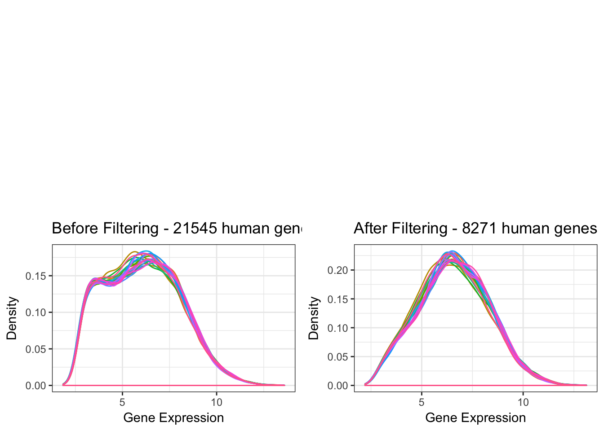
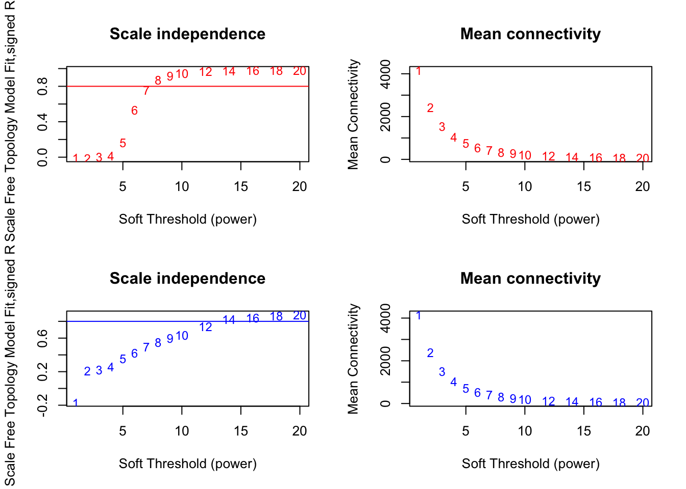

6 Weighted Co-expression Network Analysis
The aims of this analysis include:
- Pre-process gene expression data for zebrafish brain RNA-seq dataset, and separately, for a human early-onset Alzheimer’s disease brain microarray dataset.
- Construct separate gene co-expression networks for zebrafish and human data.
- Identify modules of co-expressed genes in each network.
- Determine the biological significance of modules using functional enrichment analysis and by correlating module expression with sample traits/characteristics.
- Determine whether properties of the zebrafish brain co-expression network are preserved in the human brain co-expression network.
- Export network for visualisation.
6.1 Data Import and Pre-Processing
6.1.1 Zebrafish Data
Import the DGEList object previous made in the DE gene analysis, geneCounts. This object contains three data.frames, sample (sample metadata), counts (gene counts in cpm), and genes (gene annotation from Biomart). The data has already been normalised (TMM method), which can be seen in Figure 6.1.
Figure 6.1: Boxplots showing the distribution of gene counts for each RNA-seq library in the K97Gfs dataset.
According to WGCNA’s FAQ page, genes can be filtered by mean expression of variance since low-expressed or non-varying genes usually represent noise, which is undesirable when forming a co-expression network. Below, we will filter by both mean expression and variance to retain genes which tend to be more highly expressed and variable across samples.
# Density plot of TMM-normalized gene expression distribution for each library before filtering.
A <- geneCounts %>%
cpm(log = TRUE) %>%
melt %>%
filter(is.finite(value)) %>%
ggplot(aes(x = value, colour = Var2)) +
geom_density() +
guides(colour = FALSE) +
ggtitle("Before filtering") +
labs(x = "logCPM", y = "Density")
# Retain genes which are expressed at sufficiently high levels, at least 1.5 cpm in 6 (half of the total number of) samples.
keepTheseGenes <- rowSums(cpm(geneCounts) > 1.5) >= 6
# Density plot of the gene expression distribution after filtering out low expressed genes.
B <- geneCounts %>%
cpm(log = TRUE) %>%
extract(keepTheseGenes,) %>%
melt %>%
filter(is.finite(value)) %>%
ggplot(aes(x = value, colour = Var2)) +
geom_density() +
guides(colour = FALSE) +
ggtitle("After filtering low exp genes")
# Retain genes with sufficiently high variation in expression across all samples.
# Here we define sufficiently high variation as having a standard deviation above the 25th quantile (so not in bottom 25%).
variableGenes <- rowSds(cpm(geneCounts, log=TRUE)) > quantile(rowSds(cpm(geneCounts, log=TRUE)), 0.25)
# Density plot of gene expression distribution after filtering out low variance genes.
C <- geneCounts %>%
cpm(log = TRUE) %>%
extract(variableGenes,) %>%
melt %>%
filter(is.finite(value)) %>%
ggplot(aes(x = value, colour = Var2)) +
geom_density() +
guides(colour = FALSE) +
ggtitle("After filtering variable genes")
# Density plot of gene expression distribution after filtering out both low expressed and low variance genes.
D <- geneCounts %>%
cpm(log = TRUE) %>%
extract(keepTheseGenes&variableGenes, ) %>%
melt %>%
filter(is.finite(value)) %>%
ggplot(aes(x = value, colour = Var2)) +
geom_density() +
guides(colour = FALSE) +
ggtitle("After filtering both")
# Plot the effect of filtering low expressed genes, low variation genes, and both.
grid.newpage()
print(A, vp = vp3)
print(B, vp = vp4)
print(C, vp = vp1)
print(D, vp = vp2)Figure 6.2: Effect of filtering low expressed and low variance genes from the RNA-seq libraries from the K97Gfs dataset.
After filtering out lowly expressed genes and low variance genes, each RNA-seq library contains 13381 genes. The distributions of gene counts in each RNA-seq library after normalization and filtering are shown in the following boxplots.
Figure 6.3: Effect of TMM (Trimmed Mean of M-values) normalisation followed by filtering out low expression and low variance Genes on the gene expression distributions for each RNA-seq library in the K97Gfs dataset.
The WGCNA FAQ recommends performing a log2 transformation before transposing to get the matrix into the correct format for analysis. Here, we use edgeR’s cpm() function with a log2 transformation, as the cpm() function takes into account the TMM-normalisation factors previously calculated for each library. The final matrix will be stored in an object called zebrafishWGCNAGenes.
zebrafishWGCNAGenes <- geneCounts %>% cpm(log=TRUE) %>% t %>% as.data.frame6.1.2 Human Data
The data is Affymetrix Human Gene 1.1 ST Array gene (and transcript) expression data from human post-mortem individuals with and without PSEN1-based familial Alzheimer’s disease. In this dataset, there are 14 control individuals without Alzheimer’s disease or any neurodegeneration or comorbidities, and 7 individuals with familial Alzheimer’s disease due to a mutation in PSEN1 (1 with E120G mutation, 2 with V89L mutation, and 4 with V89L mutation).
Processed and raw data can be downloaded from ArrayExpress under the accession number E-GEOD-39420. The raw data has been processed through background adjustment, normalisation, and summarisation by Robust Multi-array Analysis (RMA) using the Affy package (version 1.30.0) from Bioconductor on R language (version 2.13.2). This method is considered reasonable, so we will proceed with this analysis using the processed gene expression data.
First we import the relevant files into R.
humanSamplesfrom the fileE-GEOD-39420.sdrf.txtcontains metadata (characteristics and comments) about each sample, including their age at death, APOE genotype, Braak stage (a morphological-based measure of neurodegeneration in their brain), sex, and importantly their PSEN1 genotype.humanExprscontains the gene expression data for each sample (one sample per column and one probe per row), along with information related to each probe (row), including gene and transcript assignments.
In microarray data, there are multiple probes mapping to each gene We will use the collapseRows() function from the WGCNA package to retain only one gene per probe, using the MaxMean method to choose the gene which has the highest mean expression across the samples.
The boxplots below in Figure 6.4 show the gene expression distribution of each human sample.
Figure 6.4: Boxplots showing gene expression distribution for all samples from the human early-onset AD dataset.
We can also visualise the effect of restricting (filtering) the human dataset to include only the genes which were previously determined in the zebrafish dataset to have sufficiently high expression (1.5 cpm in at least 6 out of 12 samples) and variance (with standard deviation greater than the bottom 25% of standard deviations in the dataset). A comparison of the gene expression distribution before and after filtering is shown below.

6.2 Network Construction
6.2.1 Choice of Soft-Thresholding Power
The first step in constructing a scale-free gene co-expression requires choosing a soft-thresholding power.
Here, we test a range of possible soft-thresholding powers to find the minimum one which results in approximately scale-free topology for the zebrafish and human gene expression networks. We define an appropriate minimum scale-free topology fitting index R^2 to be at least 0.80.
# Choose a set of soft-thresholding powers to test.
powers = c(1:10, seq(from = 12, to = 20, by = 2))
# Call the network topology analysis function.
sft_human = pickSoftThreshold(human_genes,
powerVector = powers,
verbose = 0,
networkType = "signed",
RsquaredCut = 0.80)## Power SFT.R.sq slope truncated.R.sq mean.k. median.k. max.k.
## 1 1 0.01010 3.000 0.839 4170.0 4190.0 4470
## 2 2 0.01110 0.972 0.965 2420.0 2410.0 2920
## 3 3 0.00481 -0.295 0.833 1530.0 1510.0 2140
## 4 4 0.01440 -0.243 0.667 1040.0 1000.0 1660
## 5 5 0.16300 -0.480 0.693 745.0 690.0 1360
## 6 6 0.53000 -0.812 0.858 554.0 492.0 1190
## 7 7 0.75500 -0.992 0.945 425.0 359.0 1060
## 8 8 0.87000 -1.100 0.974 335.0 267.0 958
## 9 9 0.91900 -1.160 0.983 270.0 202.0 875
## 10 10 0.94300 -1.190 0.984 221.0 155.0 804
## 11 12 0.97200 -1.240 0.990 156.0 94.9 693
## 12 14 0.97800 -1.270 0.985 115.0 60.1 609
## 13 16 0.98200 -1.280 0.985 87.7 39.5 543
## 14 18 0.98300 -1.280 0.983 68.9 26.9 489
## 15 20 0.98300 -1.270 0.981 55.4 18.7 443sft_zebrafish = pickSoftThreshold(zebrafish_genes,
powerVector = powers,
verbose = 0,
networkType = "signed",
RsquaredCut = 0.80)## Power SFT.R.sq slope truncated.R.sq mean.k. median.k. max.k.
## 1 1 0.170 2.79 0.553 4160.0 4180.0 4470
## 2 2 0.210 -3.58 0.550 2400.0 2340.0 2960
## 3 3 0.221 -2.31 0.726 1520.0 1470.0 2170
## 4 4 0.258 -1.79 0.832 1020.0 976.0 1680
## 5 5 0.354 -1.70 0.893 722.0 678.0 1340
## 6 6 0.421 -1.67 0.902 529.0 489.0 1100
## 7 7 0.495 -1.65 0.909 400.0 363.0 924
## 8 8 0.551 -1.65 0.907 310.0 274.0 785
## 9 9 0.597 -1.62 0.908 245.0 211.0 675
## 10 10 0.637 -1.61 0.906 197.0 165.0 587
## 11 12 0.742 -1.54 0.945 133.0 105.0 454
## 12 14 0.822 -1.55 0.977 93.4 70.1 365
## 13 16 0.841 -1.66 0.983 68.1 48.0 310
## 14 18 0.864 -1.72 0.990 51.1 33.9 267
## 15 20 0.881 -1.78 0.994 39.3 24.5 233#-------------------------------------------------------------------------------------------#
# Plot the results:
#pdf("WGCNA/softThreshold.pdf", width = 11, height = 8)
par(mfrow = c(2,2));
cex1 = 0.9;
# Human: Scale-free topology fit index as a function of the soft-thresholding power
plot(sft_human$fitIndices[,1], -sign(sft_human$fitIndices[,3])*sft_human$fitIndices[,2],
xlab="Soft Threshold (power)",ylab="Scale Free Topology Model Fit,signed R^2",type="n",
main = paste("Scale independence"))
text(sft_human$fitIndices[,1], -sign(sft_human$fitIndices[,3])*sft_human$fitIndices[,2],
labels=powers,cex=cex1,col="red")
# this line corresponds to using an R^2 cut-off of h
abline(h=0.80,col="red")
# Mean connectivity as a function of the soft-thresholding power
plot(sft_human$fitIndices[,1], sft_human$fitIndices[,5],
xlab="Soft Threshold (power)",ylab="Mean Connectivity", type="n",
main = paste("Mean connectivity"))
text(sft_human$fitIndices[,1], sft_human$fitIndices[,5],
labels=powers, cex=cex1,col="red")
# Zebrafish: Scale-free topology fit index as a function of the soft-thresholding power
plot(sft_zebrafish$fitIndices[,1], -sign(sft_zebrafish$fitIndices[,3])*sft_zebrafish$fitIndices[,2],
xlab="Soft Threshold (power)",ylab="Scale Free Topology Model Fit,signed R^2",type="n",
main = paste("Scale independence"))
text(sft_zebrafish$fitIndices[,1], -sign(sft_zebrafish$fitIndices[,3])*sft_zebrafish$fitIndices[,2],
labels=powers,cex=cex1,col="blue");
# this line corresponds to using an R^2 cut-off of h
abline(h=0.80,col="blue")
# Mean connectivity as a function of the soft-thresholding power
plot(sft_zebrafish$fitIndices[,1], sft_zebrafish$fitIndices[,5],
xlab="Soft Threshold (power)",ylab="Mean Connectivity", type="n",
main = paste("Mean connectivity"))
text(sft_zebrafish$fitIndices[,1], sft_zebrafish$fitIndices[,5],
labels=powers, cex=cex1,col="blue")
#dev.off()The soft power chosen will be 14 as this is the minimum one that results in a scale-free network topology R2 value of at least 0.80 for both the zebrafish and human networks.
6.2.2 Constructing the co-expression networks
# 1. Construct adjacency matrices for each dataset, containing each gene's
# connection strength (similar to correlation) to all other genes.
adjacency_human <- adjacency(human_genes, power = 14, type = "signed")
adjacency_zebrafish <- adjacency(zebrafish_genes, power = 14, type = "signed")
#--------------------------------------------------------------------------------------------#
# 2. Calculate whole network connectivity, k, which is defined as the sum of connection
# strengths to other genes for each sample.
connectivity_human <- apply(adjacency_human, 1, sum)
connectivity_zebrafish <- apply(adjacency_zebrafish, 1, sum)
# Scale connectivity to be between 0 and 1.
connectivity_human <- connectivity_human/max(connectivity_human)
connectivity_zebrafish <- connectivity_zebrafish/max(connectivity_zebrafish)
# Plot scale free topology. ------------------------------------------------------------------#
# pdf("data/2017-10-09/scale-free-topology-plots.pdf", width = 8, height = 4)
# par(mfrow=c(1,2), mar=c(4,4,4,4))
# scaleFreePlot(connectivity_human, main="Human")
# scaleFreePlot(connectivity_zebrafish, main="Zebrafish")
# dev.off()
# --------------------------------------------------------------------------------------------#
# --------------------------------------------------------------------------------------------#
# 3. Restrict genes in network to high connectivity genes from either dataset to reduce noise
# during network construction.
# Here, high connectivity is defined as being above the 10th percentile.
minConnections <- 0.1
sufficientlyConnected <- ((connectivity_human > minConnections) | (connectivity_zebrafish > minConnections))
# table(sufficientlyConnected) # genes passing the minimum connectivity threshold.
# Restrict analysis to genes which pass the minimum connectivity threshold.
adjacency_human <- adjacency_human[sufficientlyConnected, sufficientlyConnected]
adjacency_zebrafish <- adjacency_zebrafish[sufficientlyConnected, sufficientlyConnected]
human_genes %<>% extract(,rownames(adjacency_human))
zebrafish_genes %<>% extract(, rownames(adjacency_zebrafish))
geneCounts <- geneCounts[rownames(adjacency_zebrafish),,keep.lib.sizes = FALSE]
# summary(colnames(human_genes)==colnames(zebrafish_genes)) #Check that genes are still in same order for both datasets.
# --------------------------------------------------------------------------------------------#
# 4. Construct topological overlap matrices for the networks.
TOM_human <- TOMsimilarity(adjacency_human, TOMType = "signed", verbose = 0)
colnames(TOM_human) <- rownames(TOM_human) <- rownames(adjacency_human)
TOM_zebrafish <- TOMsimilarity(adjacency_zebrafish, TOMType = "signed", verbose = 0)
colnames(TOM_zebrafish) <- rownames(TOM_zebrafish) <- rownames(adjacency_zebrafish)
# 5. Transform the TOM into dissimilarity matrices.
dissTOM_human <- 1 - TOM_human
dissTOM_zebrafish <- 1 - TOM_zebrafish
# 6. Hierarchial clustering of the dissimilarity TOM:
geneTree_human <- flashClust(as.dist(dissTOM_human), method = "average")
geneTree_zebrafish <- flashClust(as.dist(dissTOM_zebrafish), method = "average")6.2.3 Module Identification
To identify modules of co-expressed genes, we use a a
# Initialise the color and module eigengene list vectors for the zebrafish dataset.
colorList_zebrafish <- list()
MEList_zebrafish <- list()
#------------------------------------------------------------------------------------#
# METHOD 1: Hybrid Method + PAM
zebrafishHybridCut <- cutreeHybrid(
dendro = geneTree_zebrafish,
distM = dissTOM_zebrafish,
minClusterSize = 40,
deepSplit = 1,
pamStage = TRUE,
maxPamDist = 0.90
)## ..cutHeight not given, setting it to 0.994 ===> 99% of the (truncated) height range in dendro.
## ..done.colorList_zebrafish[["HybridCut"]] <- labels2colors(zebrafishHybridCut$labels)
MEList_zebrafish[["HybridCut"]] <- moduleEigengenes(zebrafish_genes, colorList_zebrafish$HybridCut) %>%
use_series("eigengenes") %>%
orderMEs()
colorList_zebrafish$HybridCut %>% table %>% as.data.frame %>%
set_colnames(c("Module", "Genes")) %>% dplyr::arrange(desc(Genes))## Module Genes
## 1 grey 1553
## 2 turquoise 876
## 3 blue 518
## 4 brown 373
## 5 yellow 318
## 6 green 289
## 7 red 280
## 8 black 258
## 9 pink 257
## 10 magenta 256
## 11 purple 197
## 12 greenyellow 185
## 13 tan 182
## 14 salmon 141
## 15 cyan 138
## 16 midnightblue 138
## 17 lightcyan 135
## 18 grey60 123
## 19 lightgreen 118
## 20 lightyellow 114
## 21 royalblue 112
## 22 darkred 106
## 23 darkgreen 105
## 24 darkgrey 93
## 25 darkturquoise 93
## 26 orange 84
## 27 darkorange 76
## 28 white 75
## 29 skyblue 68
## 30 saddlebrown 59
## 31 steelblue 51#------------------------------------------------------------------------------------#
# METHOD 2: Hybrid Method + Merge close modules
zebrafishHybridCut_merged <- mergeCloseModules(zebrafish_genes,
colorList_zebrafish$HybridCut,
MEs = MEList_zebrafish$HybridCut,
cutHeight = 0.15)## mergeCloseModules: Merging modules whose distance is less than 0.15
## Calculating new MEs...colorList_zebrafish[["HybridCutMerged"]] <- zebrafishHybridCut_merged$colors
MEList_zebrafish[["HybridCutMerged"]] <- zebrafishHybridCut_merged$newMEs
colorList_zebrafish$HybridCutMerged %>% table %>% as.data.frame %>%
set_colnames(c("Module", "Genes")) %>% dplyr::arrange(desc(Genes))## Module Genes
## 1 grey 1553
## 2 black 1170
## 3 salmon 1017
## 4 brown 373
## 5 lightcyan 332
## 6 yellow 318
## 7 red 280
## 8 pink 257
## 9 magenta 256
## 10 greenyellow 185
## 11 tan 182
## 12 darkred 181
## 13 cyan 138
## 14 midnightblue 138
## 15 grey60 123
## 16 lightgreen 118
## 17 lightyellow 114
## 18 royalblue 112
## 19 darkgrey 93
## 20 darkturquoise 93
## 21 orange 84
## 22 darkorange 76
## 23 skyblue 68
## 24 saddlebrown 59
## 25 steelblue 51colorList_human <- list()
MEList_human <- list()
#------------------------------------------------------------------------------------#
# METHOD 1: HYBRIDCUT, deepSplit = 2
humanHybridCut <- cutreeHybrid(
dendro = geneTree_human,
distM = dissTOM_human,
minClusterSize = 40,
deepSplit = 2,
pamStage = TRUE,
maxPamDist = 0.90
)## ..cutHeight not given, setting it to 0.993 ===> 99% of the (truncated) height range in dendro.
## ..done.colorList_human[["HybridCut"]] <- labels2colors(humanHybridCut$labels)
MEList_human[["HybridCut"]] <- moduleEigengenes(human_genes, colorList_human$HybridCut) %>%
use_series("eigengenes") %>%
orderMEs()
colorList_human$HybridCut %>% table %>% as.data.frame %>%
set_colnames(c("Module", "Genes")) %>% dplyr::arrange(desc(Genes))## Module Genes
## 1 turquoise 2713
## 2 grey 1146
## 3 blue 884
## 4 brown 798
## 5 yellow 313
## 6 green 301
## 7 red 243
## 8 black 241
## 9 pink 165
## 10 magenta 139
## 11 purple 137
## 12 greenyellow 128
## 13 tan 111
## 14 salmon 52#------------------------------------------------------------------------------------#
# METHOD 2: HYBRIDCUT, deepSplit = 3
humanHybridCut_2 <- cutreeHybrid(
dendro = geneTree_human,
distM = dissTOM_human,
minClusterSize = 40,
deepSplit = 3,
pamStage = TRUE,
maxPamDist = 0.90
)## ..cutHeight not given, setting it to 0.993 ===> 99% of the (truncated) height range in dendro.
## ..done.colorList_human[["HybridCut2"]] <- labels2colors(humanHybridCut_2$labels)
MEList_human[["HybridCut2"]] <- moduleEigengenes(human_genes, colorList_human$HybridCut2) %>%
use_series("eigengenes") %>%
orderMEs()